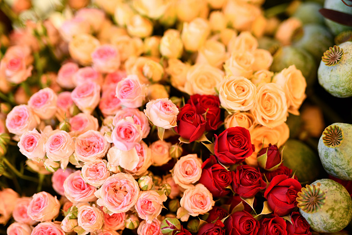
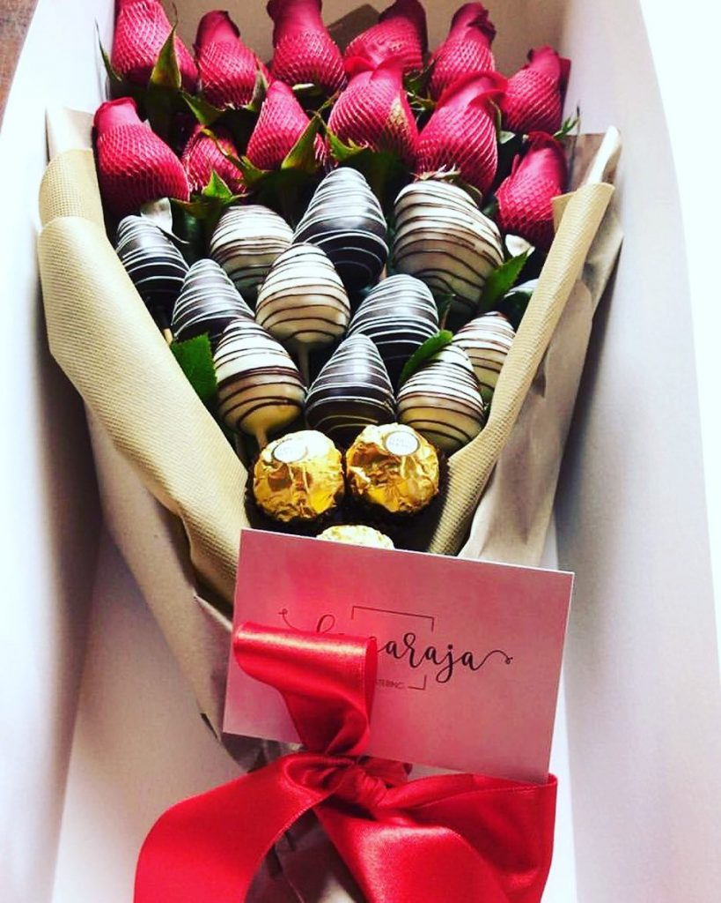
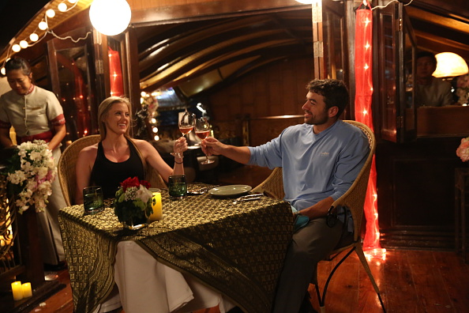
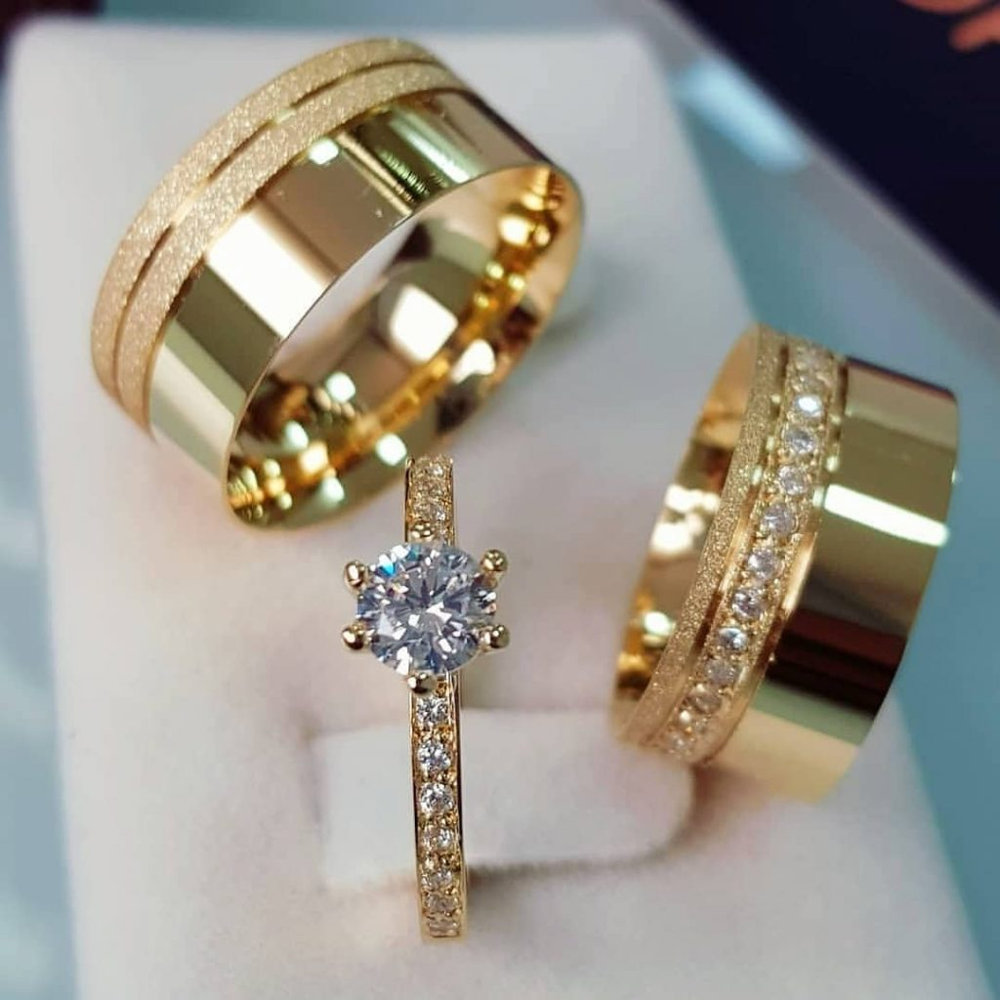
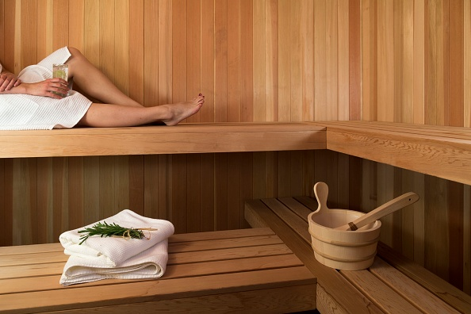
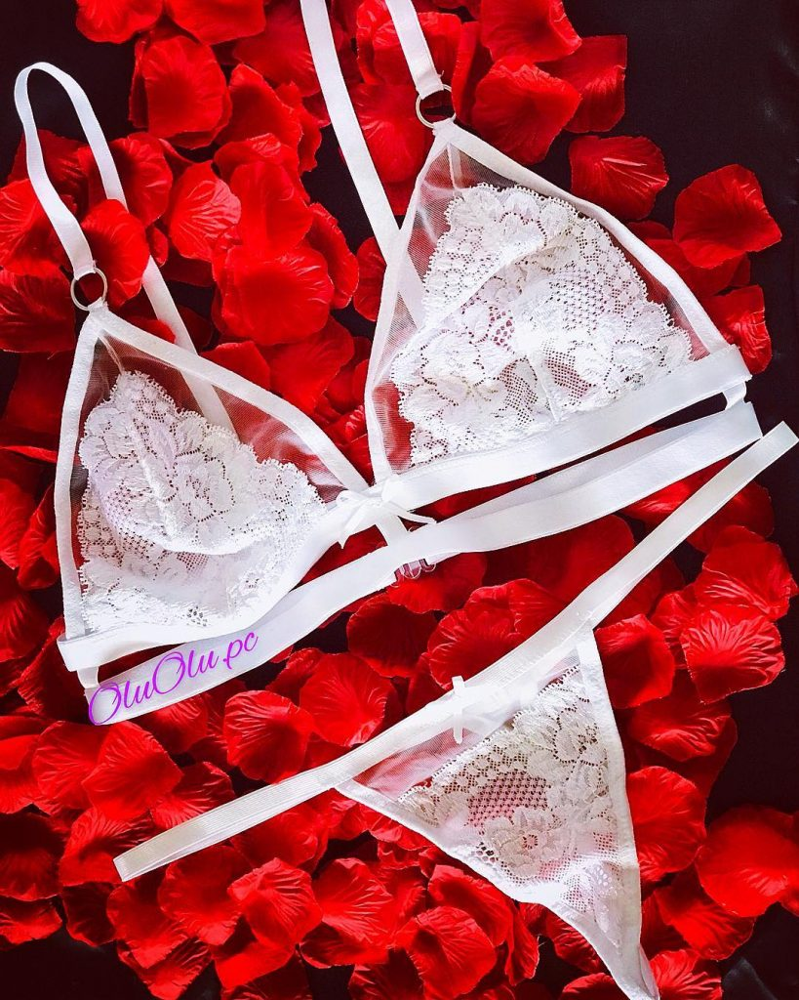
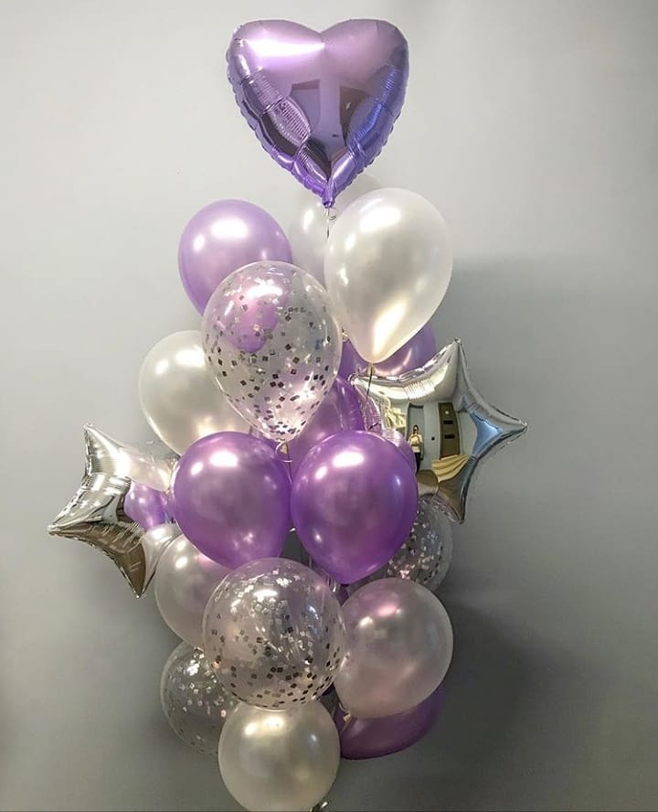
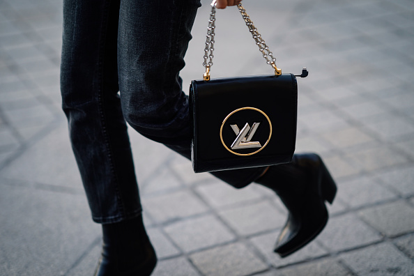
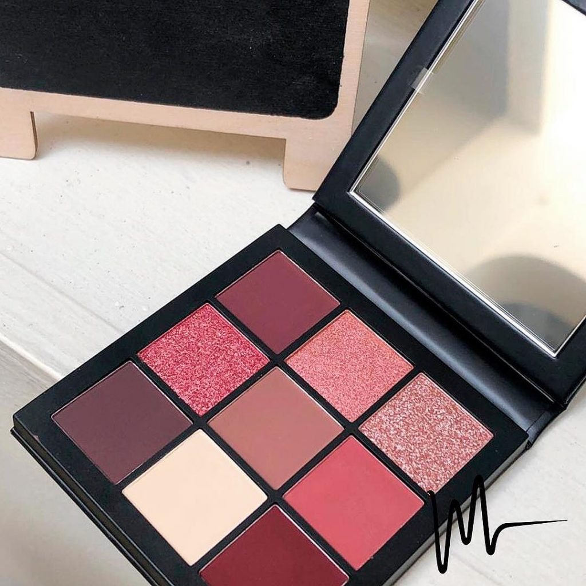

Para comenzar, vamos a ver un pequeño video introductorio, en el que se explicará el por qué se celebra el día de la mujer un 8 de Marzo.
Todas las mujeres se unen el 8 de marzo para conmemorar esta fecha tan importante.
La idea de un Día Internacional de la Mujer surgió al final del siglo XIX, en un mundo industrializado. Este fue un período de expansión, crecimiento de la población y el nacimiento de ideologías radicales. El gran problema era que muchas mujeres eran explotadas y no había una ley que las protegiera.
La idea de un día internacional de la mujer surgió al final del siglo XIX, que fue, en un mundo industrializado.
El 8 de marzo de 1857, las mujeres que trabajaban en la industria textil (llamadas “garment workers”) de Nueva York, organizaron una huelga. Ellas luchaban contra los salarios bajos y las inhumanas condiciones laborales. La reacción de la policía fue detener a las manifestantes. Dos años más tarde, estas mujeres crearon su primer sindicato con el fin de protegerse y conseguir ciertos derechos laborales básicos.
El 8 de marzo de 1908, 15,000 mujeres se manifestaron por las calles de Nueva York para exigir un recorte del horario laboral, mejores salarios, el derecho al voto y el fin del trabajo infantil. El eslogan que eligieron fue “Pan y Rosas”. Esto era porque el pan simbolizaba la seguridad económica, y las rosas, una mejor calidad de vida.
El Día Internacional de la Mujer nació de las actividades del movimiento sindical a principios del siglo XX en América del Norte y Europa.
En 1910 en Copenhage, Dinamarca, se celebró una conferencia internacional entre organizaciones socialistas del mundo. La conferencia propuso la creación de una Día de la Mujer de carácter internacional. La idea inicial partió de Clara Zetkin, una socialista alemana, que planteó la creación de un Día Internacional para conmemorar la huelga de las “garment workers” de Estados Unidos.
La propuesta se aprobó por unanimidad, que contaba con más de 100 mujeres pertenecientes a 17 países distintos. El Día se instituyó para conmemorar el movimiento por los derechos de la mujer, incluyendo el derecho a voto. La primera vez que se celebró fue el 19 de marzo de 1911 en Alemania, Austria, Dinamarca y Suiza, con mítines a los que asistieron más de 1 millón de personas.
Otra terrible tragedia ocurrió el 25 de marzo de 1911, cuando más de 100 trabajadoras textiles, mujeres inmigrantes en su mayoría, murieron en el incendio de la fábrica de Triangle Shirtwaist de Nueva York, como consecuencia de las precarias condiciones laborales de las que eran presas.
En estas huelgas también se exigía la protección de las madres, las niñas y niños.
No fue hasta el año de 1975, que coincidió con el Año Internacional de la Mujer, que el mundo entero conmemoró el Día Internacional de la Mujer por primera vez el 8 de marzo. Hoy en día, las mujeres de todos los continentes, a menudo separadas por fronteras nacionales y diferencias étnicas, lingüísticas, culturales, económicas y políticas, se unen este día para conmemorar la fecha.
Por lo que, es necesario seguir trabajando entre todas y todos para incrementar los niveles de equidad y conseguir una igualdad de género plena, para un mejor y mayor crecimiento económico y bienestar social.
Sin importar su color, es algo que no pasará nunca de moda y tiene un precio asequible.
Esta es una idea innovadora y además puedes usar tu creatividad para hacer el ramo a tu gusto.
No hay nada mejor que compartir con tu pareja en el momento de comer y pasar un rato agradable degustando nuevos sabores.
En este caso, es importante detallar el gusto de la persona para escoger la ideal.
Este plan es ideal para pasar un tiempo de relajación y compartir distintas sensaciones juntos.
Le encantará a tu pareja.
Estos son un símbolo de alegría, de celebración y de fiesta.
Es un accesorio que combina con todo y es muy útil a la hora de salir.
La mayoría de mujeres utilizan así sea un poco de maquillaje.
Faró Peñón Restaurante cuenta con el más inigualable sabor de la buena sazón en Cali – Colombia. Disfruta de un ambiente agradable con grupos en vivo de Son Cubano y Crossover.
Encontrarás un lugar único que deleitará tus sentidos. El Faró Peñón conjuga, la música en vivo y el buen ambiente caleño con la auténtica cocina tradicional mediterránea.
Encontrarás los sabores propios de la región, con ingredientes traídos directamente del campo a la mesa y preparados especialmente con inspiración italiana.
Un ambiente perfecto y acogedor, para compartir en familia y con amigos en sus diferentes espacios que te permitirán disfrutar de la característica brisa caleña.
Tony Romas es un espacio único en la ciudad de Cali, ubicado en el tradicional Hotel Dann Cali, ideal para que disfrutes la auténtica comida americana.
La parrilla y costillitas BBQ, así comolos Pescados y Mariscos a la Parrillason la especialidad y podrás acompañarlas con los vinos más exclusivos.
Este restaurante está comprometido con los comensales a ofrecer las mejores costillas que se pueden encontrar. Utilizando nuevos estilos y sabores de salsas, los cocineros están trabajando para hacer que Tony Roma's sea la única elección a la hora de disfrutar de las costillas.
ambién podrás encontrar ensaladas frescas y crujientes, deliciosas carnes a la barbacoa, el original pollo a la barbacoa y lospostres quecomplementan un menú que encantará a los comensales.
El restaurante La María, ubicado en el Hotel Movich, Casa del Alférez en Cali, presenta una excelente opción para que disfrutes la mejor gastronomía internacional y compartas con tu familia o amigos.
La María cuenta con espacios amplios, para que puedas organizar tus reuniones, un excelente servicio y una completa oferta gastronómica, que va desde sabores típicos de la región hasta platos internacionales.
El menú del restaurante evoca lo mejor de los sabores del paradisíaco Pacífico colombiano. No te puedes perder el delicioso atún rojo encostrado en polvo de moneditas de oro y crema de banano. También, el pulpo a la parrilla con chimichurri de ajo asado y pimentón morrón y el muy criollo arroz atollado de camarón. Cada uno de estos platos es un edén de sabores exóticos para tu paladar.
El Restaurante Bar Absenta nace bajo la inspiración de la bebida que lleva el mismo nombre. Este lugar ofrece a sus visitantes no solo la oportunidad de experimentar esta bebida, sino de vivir el misticismo de la Absenta por medio de la comida, un buen ambiente y su música.
Con un ambiente relajado y lleno de detalles, este es el lugar ideal para quienes quieren tomar un trago entre amigos, tener una cena romántica o quienes quieren escuchar buena música.
Cuentan con una carta de comidas y de bebidas extensa entre los que podrán encontrar: montaditos, Carpaccio, ensaladas. Y platos fuertes como: hamburguesas, diferentes cortes de carnes y picadas para compartir.
Kibbes Fusión posee todo el encanto de las noches árabes y el sabor seductor de las auténticas recetas, heredadas de generación en generación.
Lo sorprendente de su propuesta gastronómica es lo exótico de sus sabores, gracias a la combinación de especias enviadas desde el Líbano, tostadas y molidas en el restaurante; además de sus finos y delicados dulces importados de Beirut.
Platos reconocidos como el Shawarma (plato tradicional comúnmente encontrado en Medio Oriente y regiones vecinas, y que consiste en finas láminas de carne de res, cordero, pollo o ternera cocinada en un asador vertical, generalmente consumido con un pan plano) y los deliciosos Kebbabs podrás encontrar en este lugar mágico en el que su decoración muestra la cultura arabe en todo su esplendor. Cogines en el piso, telas de colores y las bailarinas te transportarán al Medio Oriente
El restaurante Taisu, ubicado en el tradicional barrio Granada al Norte de Cali, es el punto de encuentro entre oriente y occidente. Este lugar tiene una propuesta, donde los sabores de la comida Tailandesa y Japonesa se mezclan con los sabores de occidente para brindar a sus visitantes una experiencia única gastronómica.
Taisu es uno de los restaurantes orientales con más años de experiencia en Granada. Es un lugar de ambiente relajado, ideal para disfrutar de comida que fusiona el sabor oriental con el occidental.
Ofrecen una amplia variedad de sushis y de platos al teppanyaki. La decoración es estilo americano. En la terraza y en el bar, ubicados en el segundo piso, podrás llevar a cabo cenas con amigos o reuniones de trabajo.